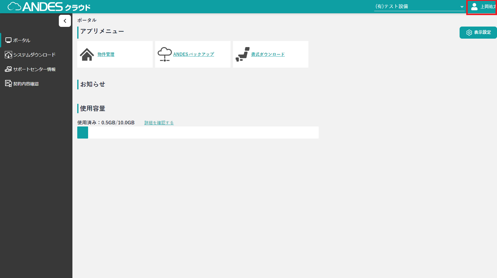
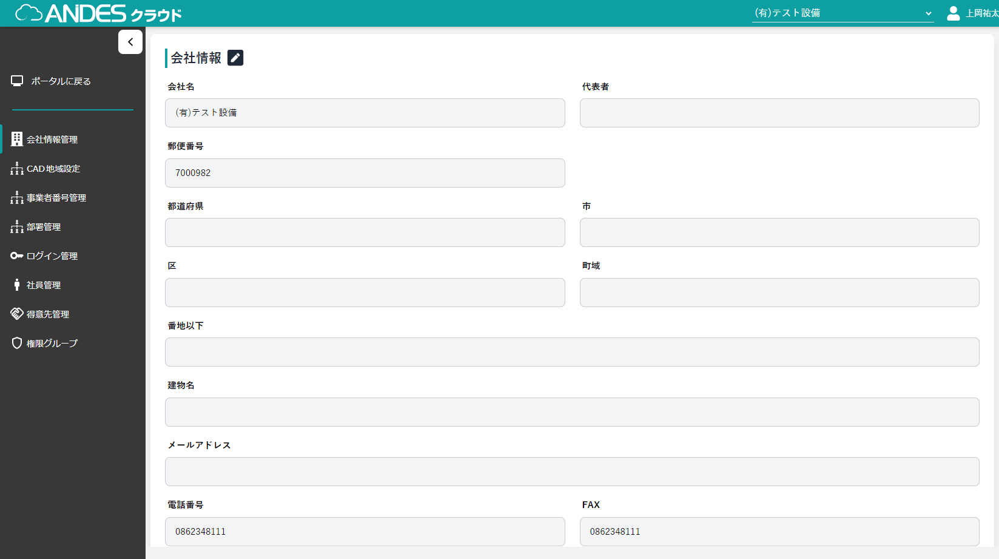

- 【ANDESクラウド】のページにアクセスします。
-
【ANDESクラウド】にログインします。
ポイント ログイン方法は「ログインする」をご参照ください。
- 【ポータル】画面が表示されます。
- 右上のログインユーザーの名前をクリックします。
- 管理者設定をクリックします。
- 【会社設定】画面が開きます。
- 「編集」ボタンをクリックします。
- 編集したい項目を書き換えます。
- 「登録」ボタンをクリックします。
注意
自社情報の編集はポータル権限「編集」が必要となります。
権限がない場合、このページの操作は行えません。 自社情報は、以下の機能で使用されます。
・「ANDES水匠for申請」：書類への「あてうち」
権限がない場合、このページの操作は行えません。 自社情報は、以下の機能で使用されます。
・「ANDES水匠for申請」：書類への「あてうち」



ポイント
変更を取り消したい場合は、「キャンセル」ボタンをクリックします。